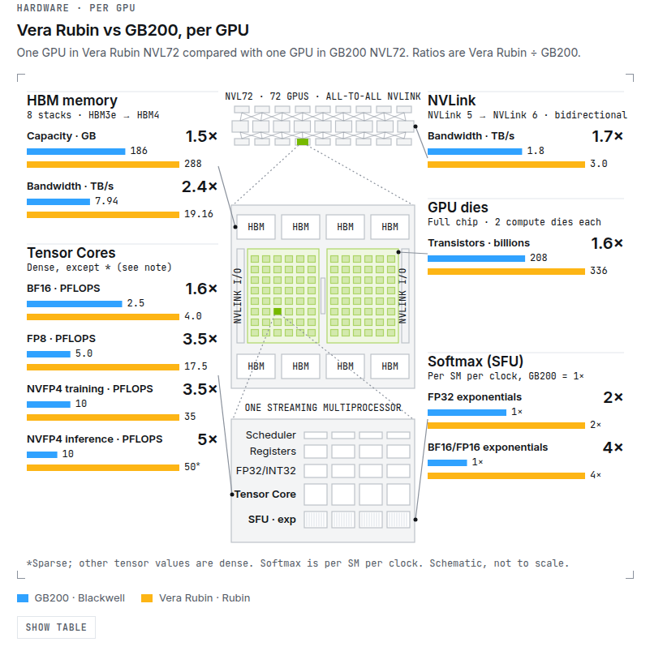
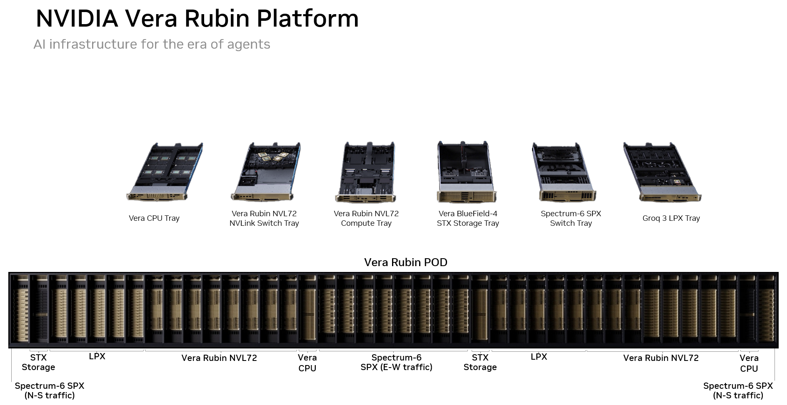
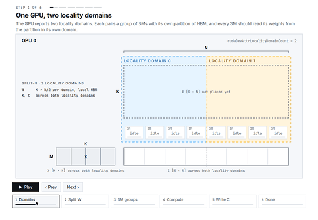
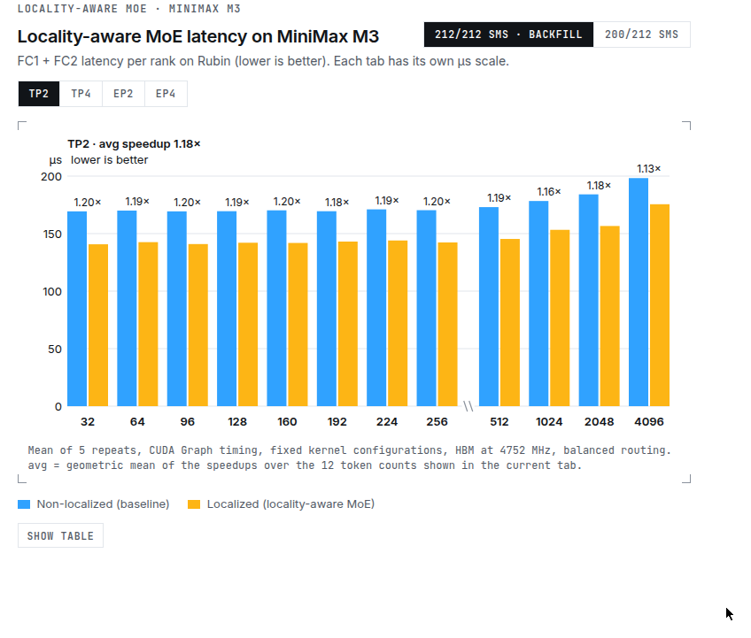
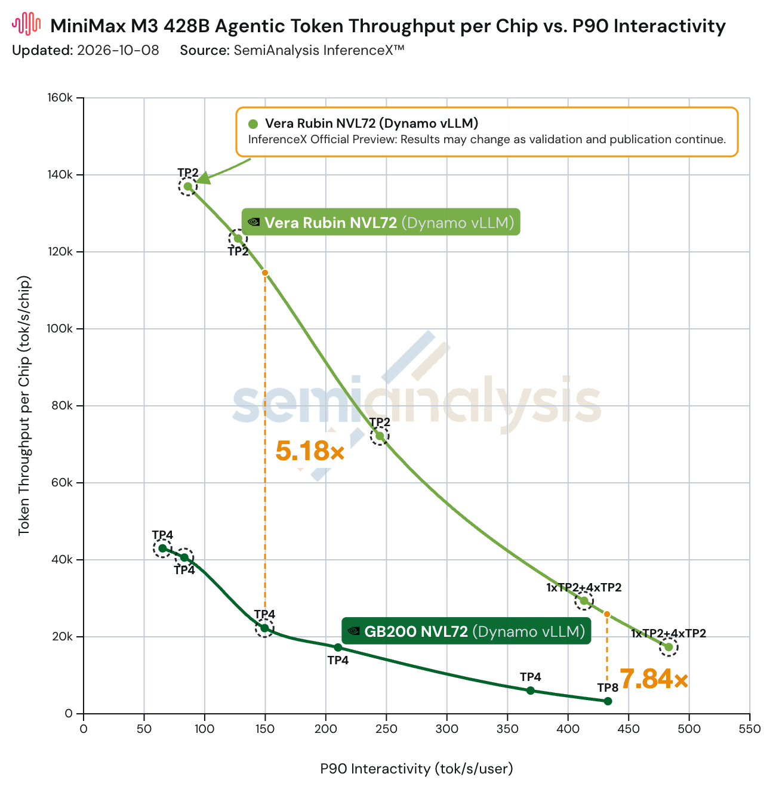

NVIDIA Vera Rubin 发布后，Inferact、NVIDIA、Red Hat 和 vLLM 社区就开始把 vLLM 往 Vera Rubin NVL72 上搬。现在 daily 容器有了，DeepSeek、Kimi、GLM、MiniMax 的模型都能跑。早期成绩：AgentX 上每 GPU 吞吐是 GB200 NVL72 的 7.8 倍。
单卡对比：NVFP4 推理 FLOPS 5 倍，HBM 从 HBM3e 升到 HBM4、带宽 2.4 倍（8 到 19.2 TB/s），NVLink 从第 5 代到第 6 代、双向带宽 1.7 倍（1.8 到 3 TB/s）。Softmax 的指数吞吐也提了：FP32 2 倍，BF16/FP16 4 倍，跟得上更快的矩阵运算。
张量核：BF16 1.6 倍，FP8 3.5 倍，NVFP4 训练 3.5 倍、推理 5 倍。晶体管 1.6 倍。交互图里 hover 每个指标会高亮 GPU 对应部位，Show table 列全部数值。

Rubin 平台是机架级协同设计，五套专用系统：Vera Rubin NVL72、Vera CPU 机架、Groq 3 LPX、Spectrum-6 SPX、BlueField-4 STX 存储。单台 NVL72 的 NVFP4 推理 FLOPS 是 GB200 的 5 倍，内存带宽 2.4 倍。第六代 NVLink 让集合通信（AllReduce、All2all）更快，prefill/decode 分离、大专家并行都受益。

Ampere 起 NVIDIA GPU 就有非均匀全局内存访问。CUDA 13.4 的 locality domain 让应用把计算和数据放在同一域里：SM 读本域 HBM 带宽更高、延迟更低。配 Green Contexts 和 CUDA stream，每个域起一个 kernel，各读各的本地内存。MoE decode 正好吃这一口，因为瓶颈在读权重。
做法是 split-N：FC1 和 FC2 的权重按列切两半，每半放一个域的全局内存，各域 SM 只读自己那半，跨域访问基本消除。激活内存 decode 时小，不做本地化开销可忽略。SM 不一定能等分，默认只用到 200 个，开 cudaDevSmResourceGroupBackfill 能用满 212 个。

MiniMax M3 的 MoE 形状实测：开 locality domain，小 token 前向平均快 1.2 倍，TP2/TP4/EP2/EP4 趋势一致。默认模式（200 SM）增益也差不多，因为小 token decode 就是权重搬运主导，本地化直接提 HBM 吞吐。这只是起点，还有调优空间。

Rubin 基于 Blackwell 架构家族，sm100f 编译的 kernel 能直接跑（新目标是 sm107，tcgen05 指令有扩展）。vLLM 的 Blackwell kernel 尤其是 GEMM 类的注意力和 MoE，不改就能上 Rubin。nightly 镜像 vllm/vllm-openai:cu134-nightly（CUDA 13.4、PyTorch 2.15）直接拉来用。
Rubin 特调 kernel 通过 FlashInfer 0.7.0 进来：dense NVFP4/MXFP4 GEMM、NVFP4 MoE、FP8 attention、FP8 MSA prefill 等。MiniMax 稀疏注意力（MSA）的 prefill kernel 也按 Rubin 调过。附录给了各 kernel 的开启参数。
AgentX 上跑 MiniMax M3：相同交互性下每 GPU 吞吐是 GB200 的 7.84 倍，150 TPS 约束下 5.18 倍。MLPerf Inference v6.1 是 vLLM 第一次上 Rubin NVL72 的公开测试，Qwen3-VL-235B-A22B 的 VLM 榜上，offline、server、interactive 三场景吞吐都是 GB300 NVL72 的 3.7 倍。
后续计划：FlashInfer 的 sm107 MegaMoE 进 vLLM、locality domain 全量用于 MoE 层、PDL 和 Lamport Sync 挖层间重叠、mega kernel 搞延迟敏感场景、Kimi K3 的 KDA/MLA 在 Rubin 上调优、DeepSeek-V4.1-Flash 的 CSA/HCA kernel、MSA decode kernel 收尾、CFT counted-write MoE all-to-all 进 FlashInfer。

参考：https://vllm.ai/blog/2026-10-09-vera-rubin-preview